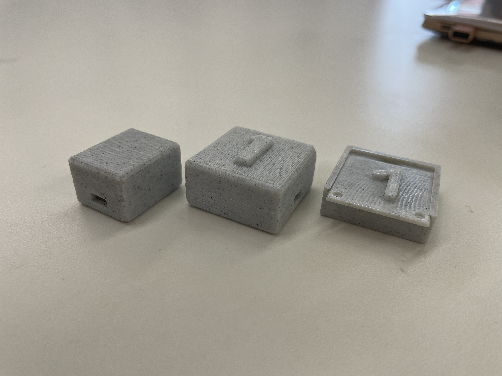For the 3D print for this week, I decided that I wanted to try to make a test print of one of the number pieces for my final project. I envisioned each piece being a mini box that I could put some sort of very small electronic piece inside of that corresponded to whatever number was on the outside of the box.
I watched a youtube tutorial on snap fit boxes to try to make a very small box with snap closures on two opposite sides in Fusion360. I parameterized the box so that if it worked well, I could size it up a bit and print it again. My first iteration was a relatively short print of around 30 minutes (not as short as my one minute toast for lab but still pretty good). I think it turned out very small and cute but I do not think the snaps worked very well--one of them broke a bit and the little piece that sticks out to fit into the snap joint hole made it very difficult to actually close the box. Once the box was closed, though, the lid and bottom fit pretty well together I think because of the registration ridge (the last part of the above youtube tutorial).
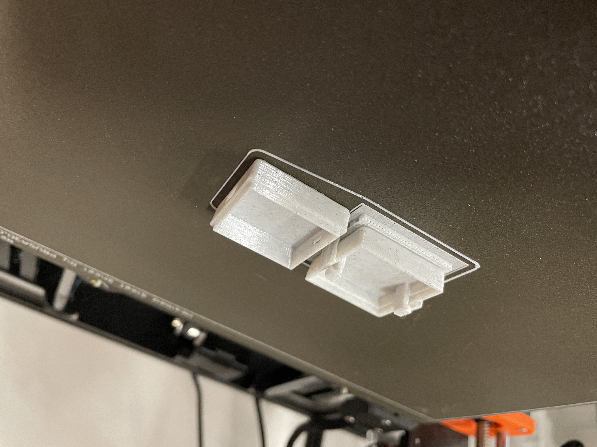I decided to give the snap fit box another chance. For this second iteration, I changed the parameters to make the box slightly larger and a square rather than a rectangular base (30mm x 30mm). I tried to make the snap joints sturdier by increasing the length of the joint attached to the inside of the lid but also more useful by make the part the sticks out slightly longer. I also added a slightly raised number 1 to the top of the box to make it closer to what I wanted for my final project. Because of this, though, I had to print with supports for the lid since the number made the top lid surface not completely flat. The print still took a little less than an hour, except it took a bit longer because the prints on the printer I was using wouldn't stick and kept peeling up off of the printer bed (even after Bobby showed me how to recalibrate the printer z-axis). Once I switched printers and finished the print, it took me ages to remove all of the support parts with pliers (maybe because I started removing them without pliers and just my fingers which may have just made everything harder for myself once I actually started using the pliers...). This box also still had the issue of it being super difficult to close and one of the joints completely snapped in half (oops), although even with just one joint, the box still held shut pretty well. However, I decided to change my method of closing the box for my next iteration.
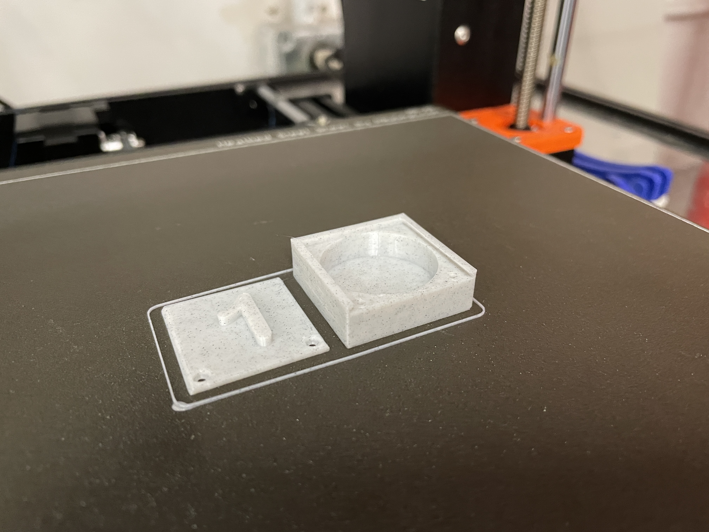For my last iteration of my number box (at least for now), I watched a different youtube tutorial on a box with a sliding dovetail lid and made a completely new Fusion360 design (but kept the 30mm x 30mm size). I did still want a way to keep the box more securely shut, though, so I decided to try to add in holes for very small screws that could be inserted to close the box. I based the measurements of the holes on a random chart from google on M1.6 screws (since I wasn't at the actual lab at that time), giving a very small margin of error (making the holes 0.1mm to 0.25mm larger than the screw measurements) since we were told that the 3D printer usually makes things a bit larger than your design. I decided to not add any holes for nuts to secure the screws mostly becuase I couldn't find any nuts that were small enough and figured I could add that in later if necessary. I also watched a tutorial on how to add text to your Fusion designs, since I realized that it was definitely a not very smart idea to try to make all of the numbers out of shapes and a much more time efficient idea to just use an already-made font. I also made the inner empty part of the box a 26mm circle after looking around a bit for things that I might be able to use as tags for each number piece (based this on a bunch of 25mm circle NFC tags I kept seeing on amazon, but of course this is subject to change since I do not actually know yet what type of mechanism I will be using). This type of box was also nice because I could print the lid flat on its bottom surface without support print pieces. Again, the print took a little under an hour to finish, and I am very happy with how it turned out! The lid slides in very smoothly and the holes for the screws line up. I tried to fit a M1.6 screw into the hole but it was too large, so I went down a size to the M1.4 screw and it fit super well. It was even super hard to get out of the hole and I had to use a magnet to remove it, which I guess is good since the whole point of the screw is to keep the box shut.
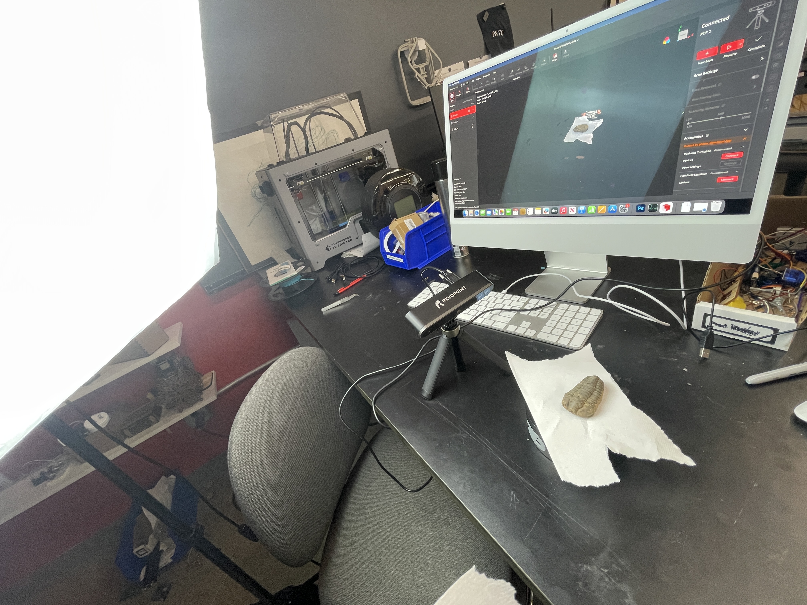After digging through all of my random stuff in my desk, I decided to scan a trilobite fossil that I got on a field trip to Spain that I went on with one of my bio classes last spring break. Lucky for me, when I got to lab Kassia was there (and no one else was) so I got lots of help from her yay! The main problem that I ran into was that the fossil was pretty dark, but when I used the dark object setting for the scan it still picked up the little turn table underneath the fossil. I tried to fix this issue by putting a paper towel between the turn table and the fossil to cover up the turn table, but even in the dark object setting, the scan picked up both the fossil and the paper towel. Kassia also moved one of the giant lights from the photobooth over to the corner with the scanner which helped but the scanner was still picking up the surface underneath the fossil.
Luckily, after I did three scans of the fossil (one of the top of the fossil on the turn table, one of the top on the paper towel, and one of the bottom of the fossil on the paper towel) Kassia figured out how to remove these extra surfaces from the individual scans. After merging all three of the edited scans, the final meshed scan looked just like the fossil (even the bottom surface that just looks like a potato)! I am very happy with this scan, especially since I know that the Harvard museums do a lot of scanning of fossils in their museum collections so this just made me feel like I was doing some kind of scientific documentation work or something. Very cool to see all the different scans merged into one.
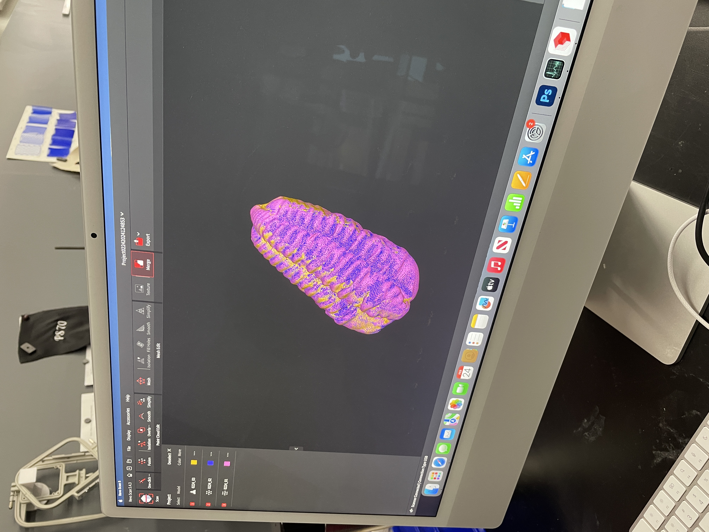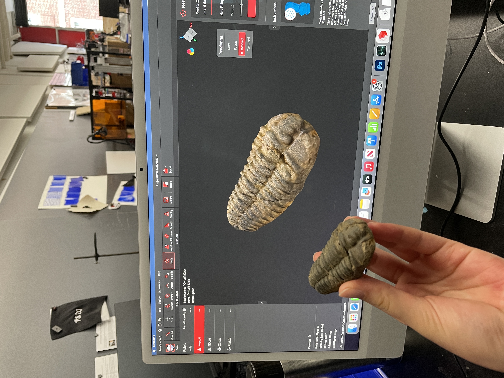
Final Project Update
Materials
3D printed number tiles (probably at least 2 of each digit 0-9)
3D printed math operation tiles (probably just + and - but maybe also multiplication)
Main box most likely made of something like wood
Microcontroller minis for each number tile and operation tile soldered to make them like ID tags for each tile
Arduino board (or some other device to detect minis tags) to put inside of main box
Mechanism to indicate correct or incorrect equation (maybe incorporate toast...maybe not)
(Use magnetic field sensors to detect spot placement of number tiles?)
Timeline
(Week 5 3D model of final project)
Week 6: use magnetic field sensors for weekly assignment in case they could be useful for final project; 3D print new version of number boxes
Week 7: work on microcontroller minis (with Bobby) and try to get ID tags working
(I think that the rest of the timeline will depend on if the minis work or not, but I think the order of things to work on after the minis will be to work on the coding for the project and get the electronics part working before finishing the actual main box part. I will probably be 3D printing number pieces throughout.)
3D Model
After my small 3D prints of the number tiles, I decided to change the design slightly for my simplified 3D model of the overall project. I watched a different youtube tutorial on snap fit boxes with the snap joints being right at the edges of the box in hopes that this would prevent the joints from breaking. I also wanted to try adding this snap joints at the bottom outside edge of the number tiles as a way to snap the pieces onto the lid of the main box. Also, to avoid support prints I made the number on top of the number tile a cut into the lid rather than sticking up out of the lid. I simplified the model by just making number tiles and making the only operation a + sign directly on the main box lid, as well as only making enough space for a one digit answer to the problem. My current idea is to 3D print the lid of the main box but make the rest of the box out of another material like wood since it is a normal shaped box.
 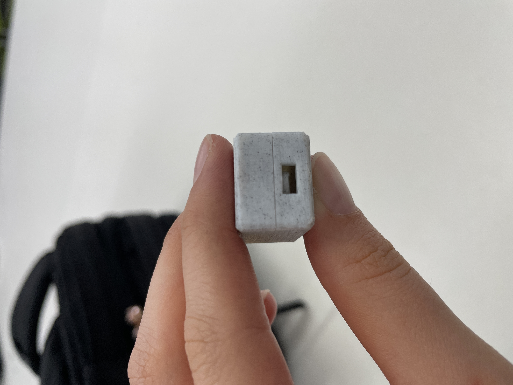
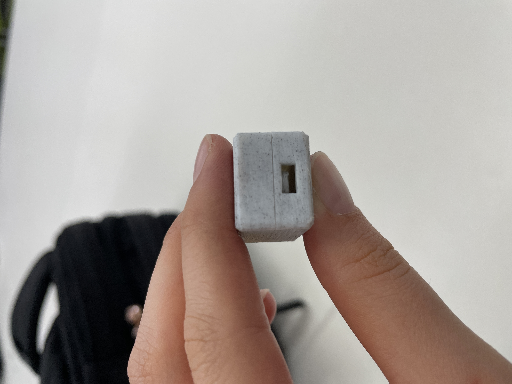
 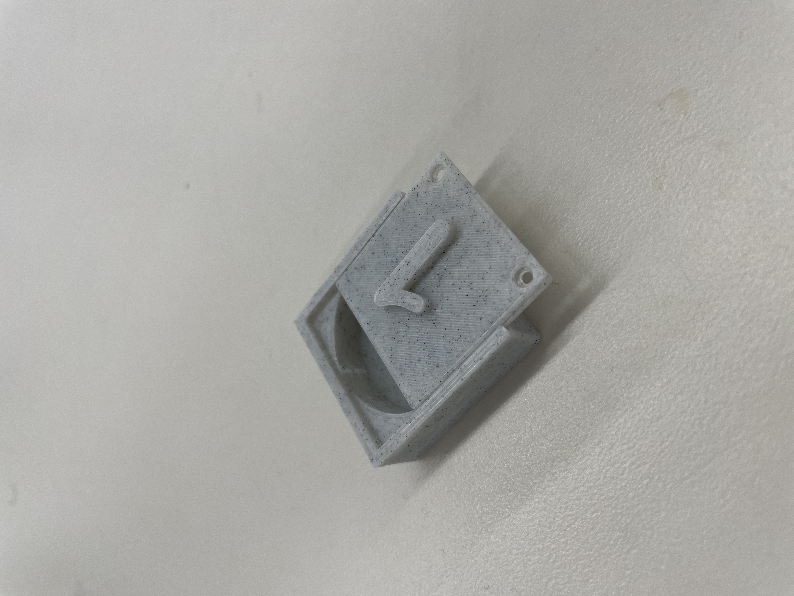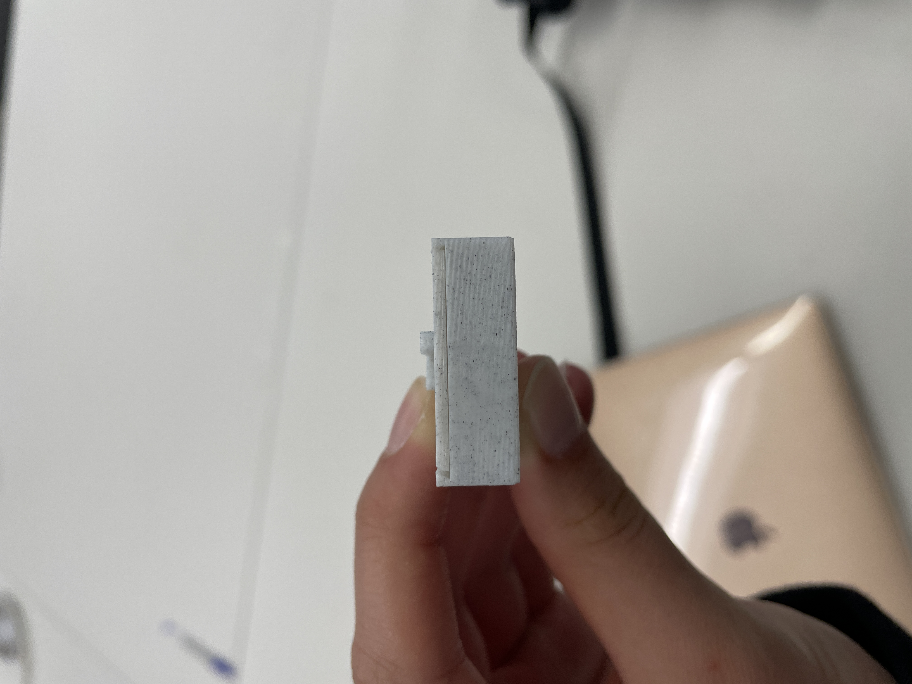
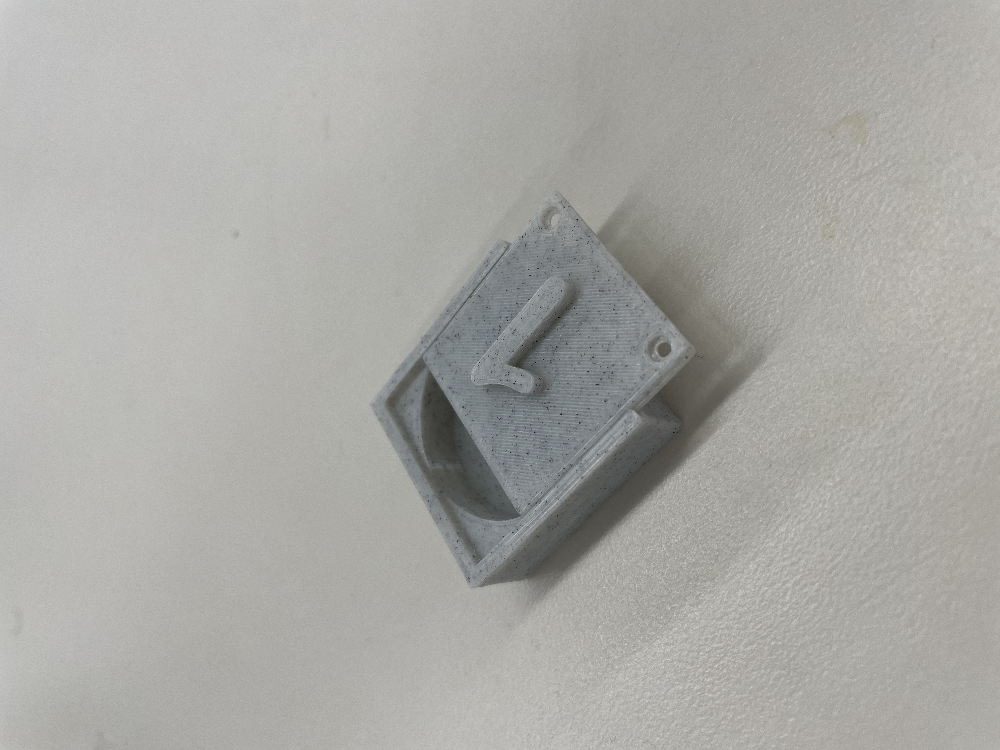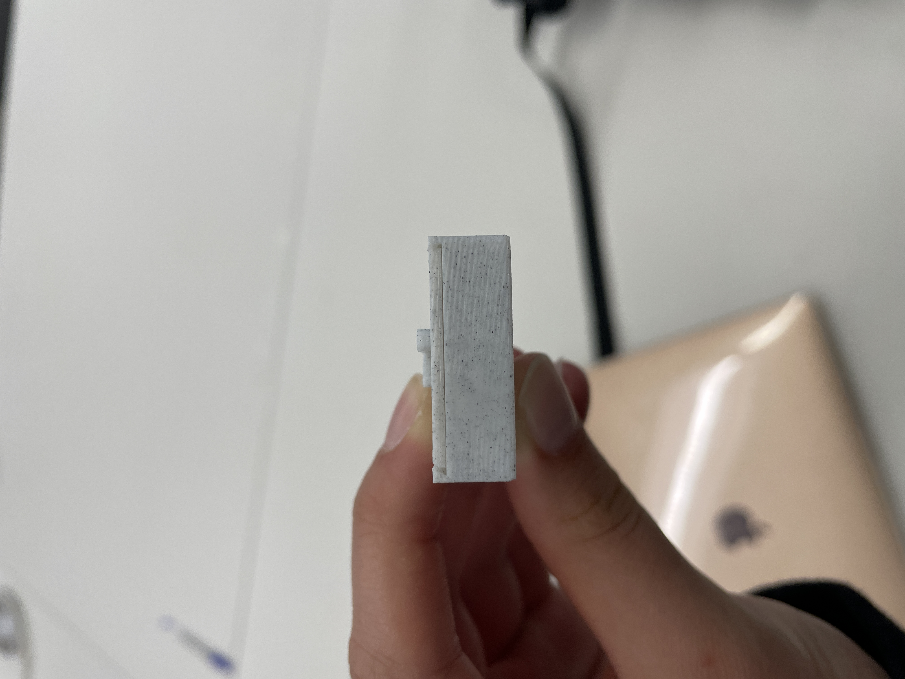 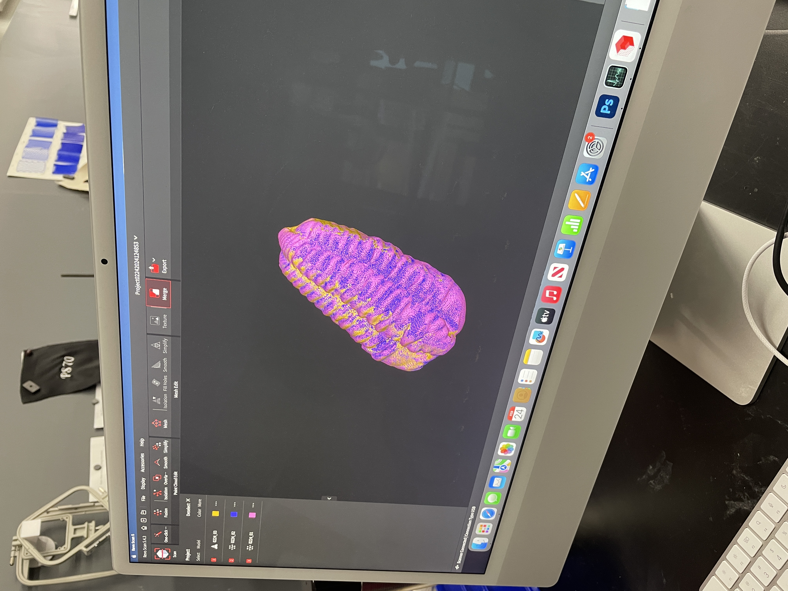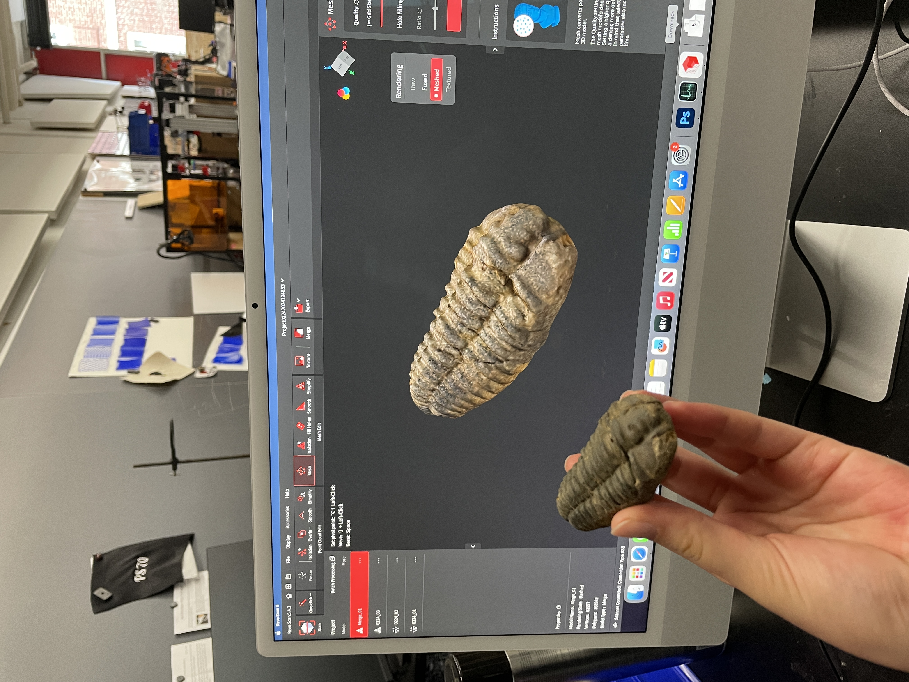
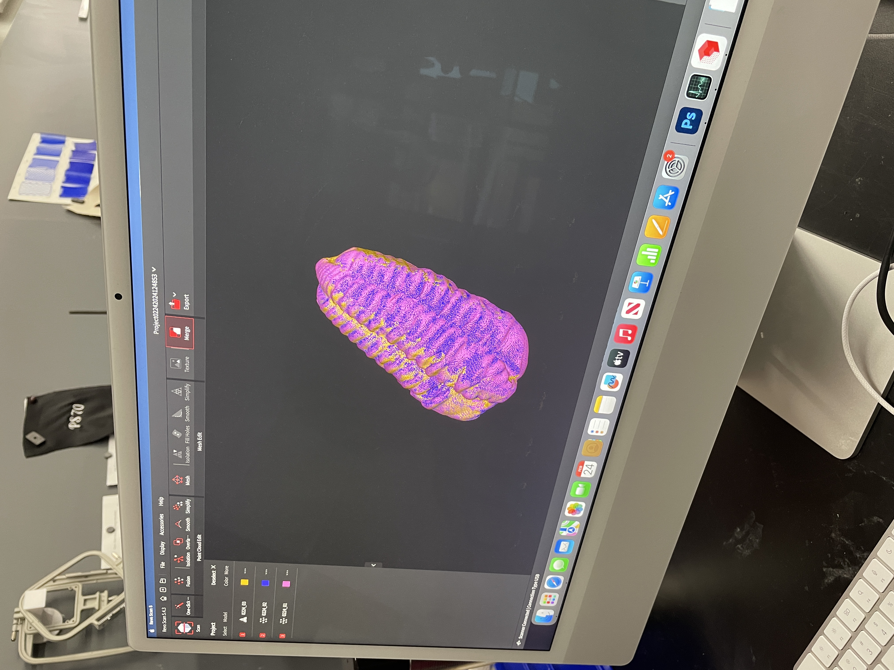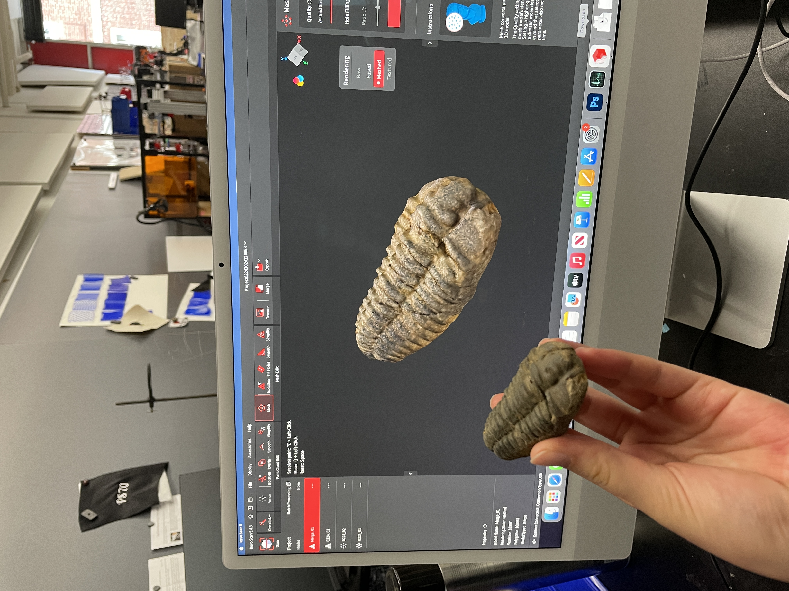